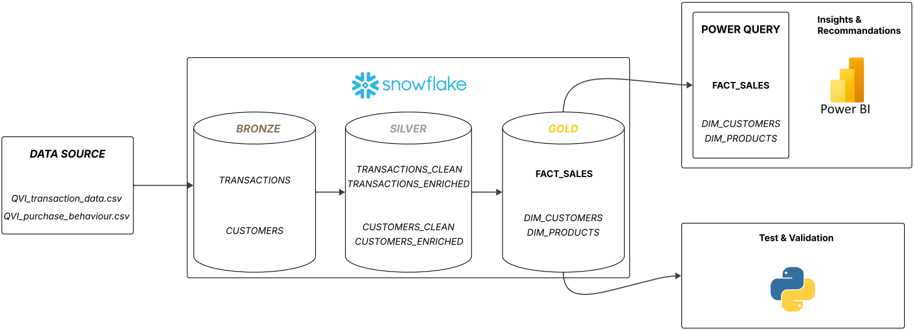
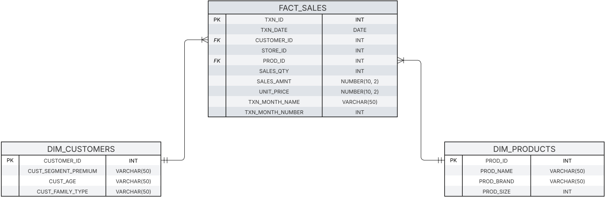
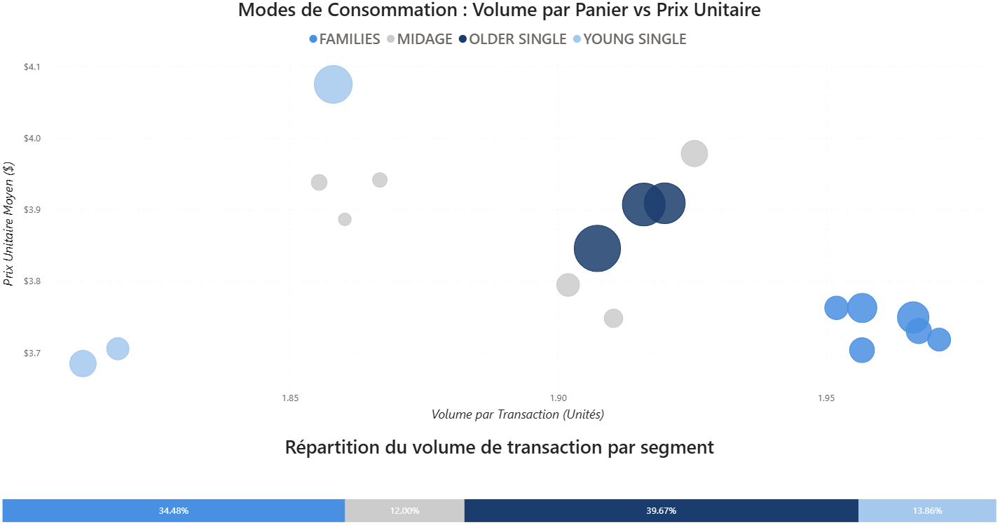
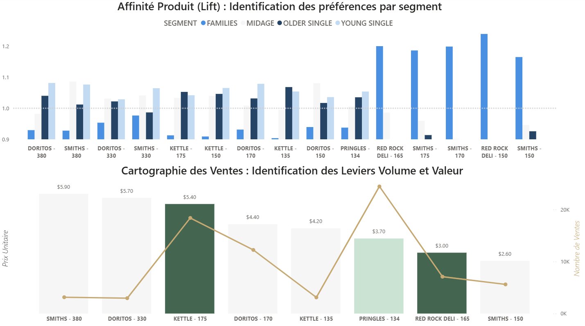
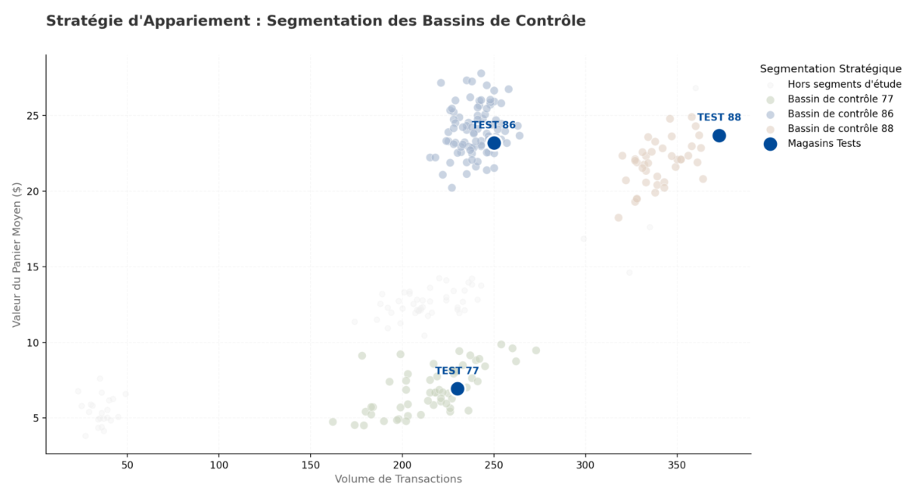
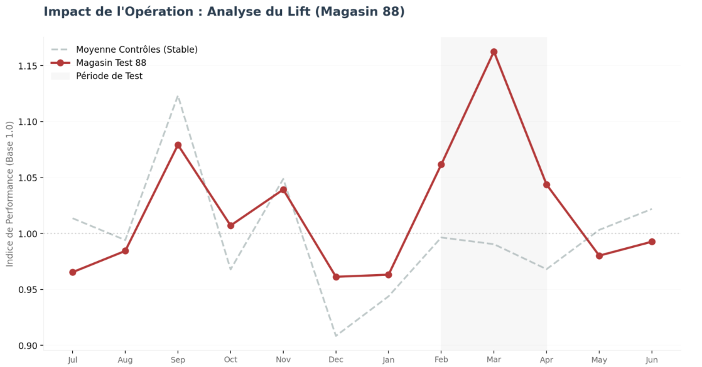

Le Contexte Business
La Responsable de Marché du segment Snacks d'une grande enseigne de distribution observe une stagnation de ses revenus. Bien que stable, ce segment n'avait jusqu'alors jamais fait l'objet d'une analyse approfondie :
aucune segmentation client n'était établie et les décisions d'activation produit étaient prises sans connaissance des comportements d'achat réels.
La Problématique
Comment l'exploitation des données transactionnelles permet-elle d'ajuster l'offre commerciale et d'activer des leviers de croissance jusqu'alors ignorés ?
Ma Solution
Pour répondre à cet enjeu, j'ai structuré une démarche end-to-end autour de trois piliers techniques et analytiques :
Objectif : Centraliser et fiabiliser les données transactionnelles brutes pour garantir une source de vérité indiscutable en amont de toute analyse.
En entreprise, les données de ventes, clients et produits sont souvent dispersées dans des systèmes hétérogènes (ERP, CRM, fichiers CSV...). Sans centralisation préalable, une analyse cohérente et fiable à l'échelle de l'organisation est impossible.

Cliquer pour agrandir
Cliquer pour agrandirObjectif : Identifier les leviers de croissance sur le segment Snacks à partir des données du S2 2018.
Le rayon Snacks est un segment d'achat impulsif — faible fréquence d'achat (~2 transactions/semestre/client) et flux client stable : l'acquisition et la rétention ne sont pas des leviers actionnables.
Le seul levier : optimiser le panier moyen — en augmentant le volume d'articles achetés ou la valeur unitaire par article.

Cliquer pour agrandir
Cliquer pour agrandirIdentifier les segments moteurs et comprendre leur mode de consommation pour définir le bon levier d'activation.
Croiser le score d'affinité (Lift) avec le prix unitaire et le volume de ventes pour sélectionner les produits à activer par segment.
| Segment | Levier | Produit | Action |
|---|---|---|---|
| Families | Volume | Red Rock Deli 165g | Pack de 3 en promotion |
| Older Singles | Valeur | Kettle 175g | Pack de 2 — mise en avant premium |
| Mass Market | Transversal | Pringles 134g | Pack de 3 — haute visibilité |
Objectif : Mesurer l'impact des recommandations définies en section II, déployées sur 3 magasins test entre février et avril 2019.

Cliquer pour agrandir
Cliquer pour agrandirIdentifier pour chaque magasin test un magasin contrôle au profil comparable, afin d'isoler l'effet de l'activation des variations naturelles du marché.
Comparer l'évolution du CA du magasin test avec son contrôle sur la période d'activation pour quantifier le lift généré.
| Magasin Test | Lift | P-Value | Confiance | Statut |
|---|---|---|---|---|
| Store 77 | +20.98% | 0.098 | 90.2% | Tendance forte |
| Store 86 | +10.72% | 0.241 | 75.9% | Non significatif |
| Store 88 | +8.53% | 0.006 | 99.4% | Validé & Scalable |
Le Store 88 est le résultat clé — lift de +8,5% validé statistiquement (p-value : 0,006 · 99% de confiance). La stratégie est scalable sur des magasins au profil similaire.
Les Stores 77 et 86 affichent des résultats non conclusifs. Le Store 77, plus petit en volume de transactions, présente une variance naturellement plus élevée qui fragilise la significativité statistique. Le Store 86 suggère des facteurs locaux non neutralisés. Une investigation approfondie est nécessaire avant tout déploiement.